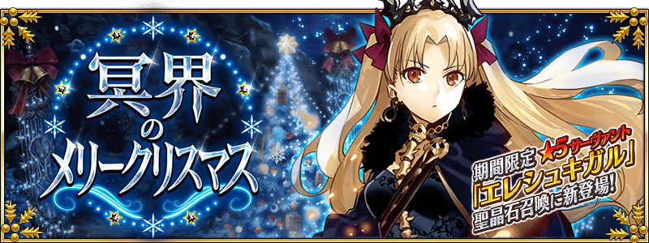

◆活動開始時間◆
2017年12月中旬預定
◆活動概要◆
舉辦期間限定活動「冥界的聖誕節快樂」！
為了拯救因突然到訪的異常氣象與連Servant也被侵蝕的謎之熱病而瀕臨全滅危機的迦勒底，在單身前赴那處的Master前現身的新聖誕老人究竟是？
請盡情享受贈予由奈須きのこ執筆完全原創故事的期間限定活動「冥界的聖誕節快樂」。
※期間限定★5(SSR)Servant「艾蕾修卡」將會在期間限定聖晶石召喚抽出。
◆活動参加條件◆
只限通過「第七特異點 絕對魔獸戰線 巴比倫尼亞」的Master才能參加
在「冥界的聖誕節快樂」的活動關卡，會賦予特定Servant對活動攻略有利的效果！
強化對象Servant，挑戰活動吧！
※自12月9日(六) 21:00，在Servant選擇畫面和Servant強化畫面等中，追加「下次活動對象」篩選器。
由於是只顯示於下個舉辦活動活躍Servant的便利功能，敬請活用。
◆對象Servant◆
| 職階 | 稀有度 | Servant名 |
|---|---|---|
| Archer | ★★★★★ | |
| Lancer | ★★★★★ | |
| ★★★★ | ||
| ★★★★ | ||
| ★★★ | ||
| ★★ | ||
| ★★ | ||
| Rider | ★★★★ | |
| ★★★ | ||
| Caster | ★★★★★ | |
| ★★★★ | ||
| ★★★ | ||
| Shielder | ★★★ |